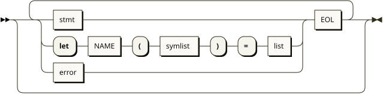
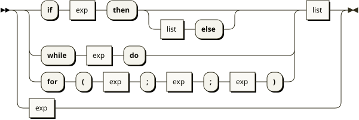
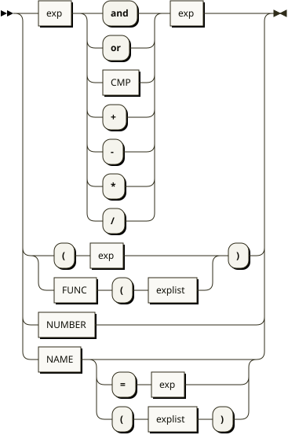
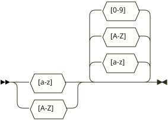
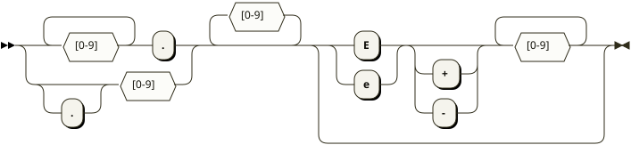
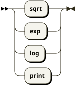
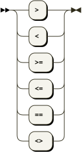

Universidade Tecnológica Federal do Paraná Ciência da
Computação
Trabalho Prático 1 Analisadores Léxico e Sintático
Igor Fortes Oliveira Lobo
Guilherme Scorsim Dos Santos
Ponta Grossa – PR
2026
Sumário
01Apresentação da Linguagem03
02Regras de Análise Léxica e Diagramas de Transição04
03Analisador Léxico – Implementação em Flex06
04Tabela de Símbolos08
05Regras de Análise Sintática – BNF e Diagramas09
06Analisador Sintático – Implementação em Bison11
07Conjunto de Testes e Resultados13
08Uso de Ferramentas de Inteligência Artificial15
09Referências16
01 · Apresentação da Linguagem
Apresentação da Linguagem de Programação Básica
A linguagem implementada neste trabalho é uma
calculadora avançada estendida com
construções de controle de fluxo, funções pré-definidas, funções
definidas pelo usuário e, como requisitos deste trabalho, o
comando FOR e os operadores lógicos
AND e OR.
Características Gerais
A linguagem possui as seguintes características:
Variáveis e atribuições: identificadores
alfanuméricos podem receber valores numéricos.
Expressões aritméticas: operadores
+, -, *,
/ com precedência e associatividade padrão.
Expressões de comparação: operadores
>, <, >=,
<=, ==, <>.
Operadores lógicos:AND e
OR, associativos à esquerda, com precedência
menor que aritméticos e maior que comparações (para
AND).
Controle de fluxo: comandos
if/then/else, while/do e
for(init; cond; inc).
Funções pré-definidas:sqrt,
exp, log, print.
Funções definidas pelo usuário: declaradas
com let nome(arg1, ...) = corpo;.
Tipos de Dados
A linguagem é tipada de forma simples: todos os valores são
números em ponto flutuante
(double-precision). Não há tipos booleanos explícitos; o valor
0.0 representa falso e qualquer valor diferente de
zero representa verdadeiro.
Exemplo de programa válido: sum = 0; for (i = 1; i <= 10; i = i + 1) sum = sum + i;
print(sum);
02 · Análise Léxica
Regras de Análise Léxica e Diagramas de Transição
A análise léxica é responsável por reconhecer os
tokens da linguagem a partir do fluxo de
caracteres de entrada. Cada token corresponde a uma unidade
sintática indivisível.
Conjunto de Tokens
Categoria
Tokens
Descrição
Palavras-chave
if, then,
else, while,
do, let, for,
and, or
Reservadas da linguagem
Identificadores
NAME
Sequência alfanumérica iniciada por letra
Números
NUMBER
Literais inteiros ou de ponto flutuante
Operadores
+, -, *,
/, =, CMP
Aritméticos, atribuição e comparação
Separadores
(, ), ;,
,
Delimitadores sintáticos
Funções
FUNC
sqrt, exp, log, print
Especial
EOL
Fim de linha (newline)
Diagramas de Transição
Os diagramas de transição ilustram os
autômatos finitos que reconhecem cada
classe de token a partir do fluxo de caracteres de entrada. Eles
foram elaborados utilizando a ferramenta
Regex-Vis.
Identificadores e Palavras-chave
Figura 9 – Autômato finito para NAME e
palavras-chave
Números (inteiros e ponto flutuante)
Figura 10 – Autômato finito para NUMBER
Operadores de Comparação
Figura 11 – Autômato finito para CMP (dois
caracteres)
Operadores Lógicos
Figura 12 – Autômato finito para AND e
OR
Funções Pré-definidas
Figura 13 – Autômato finito para FUNC
Observação sobre operadores de 1 caractere
Operadores simples como +, -,
*, /, =, (,
), ; e , são reconhecidos
por transições diretas de um único caractere e, por serem
triviais, não possuem diagramas dedicados.
03 · Implementação Léxica
Analisador Léxico – Implementação em Flex
O analisador léxico foi implementado utilizando a ferramenta
Flex (Fast Lexical Analyzer Generator).
O arquivo lexer.l define as expressões regulares
para cada token e as ações semânticas associadas.
Estrutura do Arquivo lexer.l
O arquivo segue a estrutura padrão de uma especificação Flex:
Seção de opções:%option noyywrap nodefault yylineno noinput
nounput
Seção de inclusões: headers do Bison para
tipos compartilhados
Seção de definições: macro
EXP para expoentes de ponto flutuante
Em relação à calculadora original, foram introduzidos três novos
tokens:
FOR – palavra-chave for,
necessária para o comando de laço contado.
AND – operador lógico and,
representando a conjunção booleana.
OR – operador lógico or,
representando a disjunção booleana.
Ponto de atenção
As palavras-chave são verificadas antes da
regra genérica de identificadores
([a-zA-Z][a-zA-Z0-9]*), garantindo que
for, and e or sejam
reconhecidos como tokens reservados e não como nomes de
variáveis.
04 · Tabela de Símbolos
Tabela de Símbolos
A Tabela de Símbolos (TS) armazena
informações sobre identificadores da linguagem. Nela, cada
símbolo pode representar uma variável ou uma função definida
pelo usuário.
Estrutura do Símbolo
struct symbol {
char *name; /* nome do identificador */
double value; /* valor atual (variável) */
struct ast *func; /* corpo da função (AST) */
struct symlist *syms; /* lista de argumentos */
};
Gerenciamento da TS
A tabela é implementada como um
array de tamanho fixo (NHASH = 9997) com tratamento de colisões por
sondagem linear. A função de hash
utiliza o algoritmo:
hash = hash * 9 ^ c;
Funções Principais
Função
Assinatura
Descrição
lookup
struct symbol *lookup(char *sym)
Busca ou insere um símbolo na TS
newsymlist
struct symlist *newsymlist(...)
Cria lista encadeada de argumentos
symlistfree
void symlistfree(struct symlist *sl)
Libera lista de símbolos
Correção de Linkage
No código original, symtab era definido diretamente
no header (bison-calc.h), causando
múltiplas definições no linker quando mais de
um arquivo objeto o incluía. A correção consistiu em:
Declarar extern struct symbol symtab[NHASH]; no
header.
Definir struct symbol symtab[NHASH]; em
calc_aux.c.
05 · Análise Sintática
Regras de Análise Sintática – BNF e Diagramas
A gramática da linguagem foi formalizada em notação
BNF (Backus-Naur Form) estendida e
posteriormente transcrita para a ferramenta Bison.
Gramática em BNF Estendida
calclist ::= /* vazio */
| calclist stmt EOL
| calclist LET NAME '(' symlist ')' '=' list EOL
| calclist error EOL
stmt ::= IF exp THEN list
| IF exp THEN list ELSE list
| WHILE exp DO list
| FOR '(' exp ';' exp ';' exp ')' list
| exp
list ::= /* vazio */
| stmt ';' list
exp ::= exp CMP exp
| exp AND exp
| exp OR exp
| exp '+' exp
| exp '-' exp
| exp '*' exp
| exp '/' exp
| '(' exp ')'
| NUMBER
| NAME
| NAME '=' exp
| FUNC '(' explist ')'
| NAME '(' explist ')'
explist ::= exp
| exp ',' explist
symlist ::= NAME
| NAME ',' symlist
Precedência e Associatividade
A tabela de precedência, do menor para o maior nível, é:
Nível
Operadores
Associatividade
1 (menor)
OR
Esquerda
2
AND
Esquerda
3
CMP (==, <>, <, >, <=,
>=)
Não-associativo
4
= (atribuição)
Direita
5
+, -
Esquerda
6 (maior)
*, /
Esquerda
Diagramas de Sintaxe
Os diagramas de sintaxe a seguir foram gerados pela ferramenta
Railroad Diagram Generator
a partir da gramática em EBNF da linguagem.
Programa (calclist)

Figura 1 – Diagrama de sintaxe do nível superior
calclist
Comando (stmt)

Figura 2 – Diagrama de sintaxe do comando
stmt (if, while, for, exp)
Lista de Comandos (list)
Figura 3 – Diagrama de sintaxe da lista de comandos
list
Expressão (exp)

Figura 4 – Diagrama de sintaxe das expressões
exp (inclui AND, OR, CMP e aritméticos)
Terminais da Linguagem

Figura 5 – Diagrama de sintaxe do terminal NAME

Figura 6 – Diagrama de sintaxe do terminal
NUMBER

Figura 7 – Diagrama de sintaxe do terminal FUNC

Figura 8 – Diagrama de sintaxe do terminal CMP
06 · Implementação Sintática
Analisador Sintático – Implementação em Bison
O analisador sintático foi implementado com a ferramenta
Bison, gerando um parser LALR(1) a
partir da gramática formalizada.
Estrutura do Arquivo parser.y
O arquivo Bison contém três seções principais:
Declarações: union de tipos, tokens,
precedência e tipos semânticos.
Regras gramaticais: produções com ações em
C para construção da AST.
Rotinas auxiliares: vazias neste projeto
(funções estão em calc_aux.c).
Declarações de Precedência
%left OR
%left AND
%nonassoc <fn> CMP
%right '='
%left '+' '-'
%left '*' '/'
A regra captura três expressões (inicialização, condição,
incremento) e uma lista de comandos. O nó AST resultante é do
tipo 'R' e utiliza a estrutura
struct forloop.
A AST é o pilar da implementação. Cada nó possui um
nodetype que determina sua semântica. Os novos nós
adicionados foram:
Nodetype
Estrutura
Significado
'R'
struct forloop
Comando FOR (init, cond, inc, body)
'A'
struct ast
Operador lógico AND
'O'
struct ast
Operador lógico OR
Avaliação da AST
A função eval(struct ast *a) percorre a árvore
recursivamente. Os novos casos implementados:
case 'A':
v = (eval(a->l) != 0 && eval(a->r) != 0) ? 1 : 0;
break;
case 'O':
v = (eval(a->l) != 0 || eval(a->r) != 0) ? 1 : 0;
break;
case 'R': {
struct forloop *fl = (struct forloop *)a;
v = 0.0;
eval(fl->init);
if (fl->body) {
while (eval(fl->cond) != 0) {
v = eval(fl->body);
eval(fl->inc);
}
}
break;
}
07 · Testes
Conjunto de Testes e Resultados
Foi elaborada uma
suite de testes automatizada com 20
cenários, cobrindo regressão da calculadora original e as novas
funcionalidades. Os testes são executados via
make test.
Estrutura dos Testes
Os testes residem na pasta tests/, organizados em
pares .in (entrada) e .out (saída
esperada):
Garantir que funcionalidades originais permanecem
intactas
FOR
for_basico, for_print, for_multiplos
Validar inicialização, condição, incremento e corpo
AND
and_00, and_01, and_10, and_11
Testar todas as combinações de truthiness
OR
or_00, or_01, or_10, or_11
Testar todas as combinações de truthiness
Precedência
precedencia_and_or, cmp_and, cmp_or
Verificar ordem correta de avaliação
Execução e Resultados
$ make test
...
Resultado: 20 passaram, 0 falharam
========================================
Resultado
Todos os 20 testes executaram com sucesso, demonstrando que
tanto o analisador léxico quanto o sintático tratam corretamente
os elementos da linguagem, incluindo os novos comandos
FOR, AND e OR.
08 · Uso de IA
Uso de Ferramentas de Inteligência Artificial
Conforme orientação do documento de trabalho (item 8), este
capítulo descreve
onde, como e quais ferramentas de
inteligência artificial foram utilizadas no desenvolvimento
deste projeto.
Ferramenta Utilizada
Foi utilizado o assistente de código
OpenCode (Kimi k2.6), integrado ao ambiente de
desenvolvimento, para dar suporte nas seguintes etapas:
Etapa
Uso da IA
Intervenção humana
Entendimento da linguagem base
Leitura e explicação dos arquivos de referência
(ref/src/)
Análise crítica das decisões de design
Implementação do lexer
Adição dos tokens FOR,
AND, OR
Revisão da posição das regras e teste manual
Implementação do parser
Adição da regra do FOR, declarações de
precedência e operadores lógicos
Validação da gramática contra ambiguidades
Extensão da AST
Criação de struct forloop,
newfor, atualização de
treefree e eval
Verificação de leaks de memória e lógica de
curto-circuito
Correção de bugs
Identificação e correção do erro de linkage de
symtab e warnings do GCC
Teste de compilação e execução
Infraestrutura
Criação do Makefile e suite de testes automatizada
Validação dos casos de teste e ajuste de formatação
Relatório
Geração do conteúdo técnico e formatação em HTML/PDF
Revisão estrutural e acadêmica do documento
Fluxo Metodológico
O desenvolvimento seguiu um ciclo iterativo de
pair programming com o assistente:
Especificação: o estudante define o
objetivo com base no plano de trabalho.
Geração: a IA propõe uma implementação
inicial.
Revisão: o estudante analisa a proposta,
identifica erros ou melhorias.
Teste: compilação e execução da suite de
testes.
Refinamento: ajustes iterativos até
aprovação de todos os testes.
Nota de transparência: todos os trechos de
código gerados pela IA foram revisados, compilados e testados
manualmente. A lógica de avaliação da AST (eval) e
o gerenciamento de memória (treefree) foram
verificados para garantir ausência de vazamentos e comportamento
correto dos operadores lógicos e do laço FOR.
09 · Referências
Referências
LEVINE, John. Flex & Bison. Editora O'Reilly,
2009. 271 p.
UTFPR – Câmpus Ponta Grossa.
Trabalho Prático 1 – Construção de Analisadores Léxico
& Sintático. Disciplina de Compiladores 2026.1. Professor Gleifer Vaz
Alves.
UTFPR – Câmpus Ponta Grossa.
Apostila 04 – Bison: Analisador Sintático através de
Calculadora (versão estendida). 2014.
Gov.br/MEC. Referencial de IA na Educação.
Disponível em:
https://www.gov.br/mec/pt-br/referencial-de-ia-na-educacao

.svg)